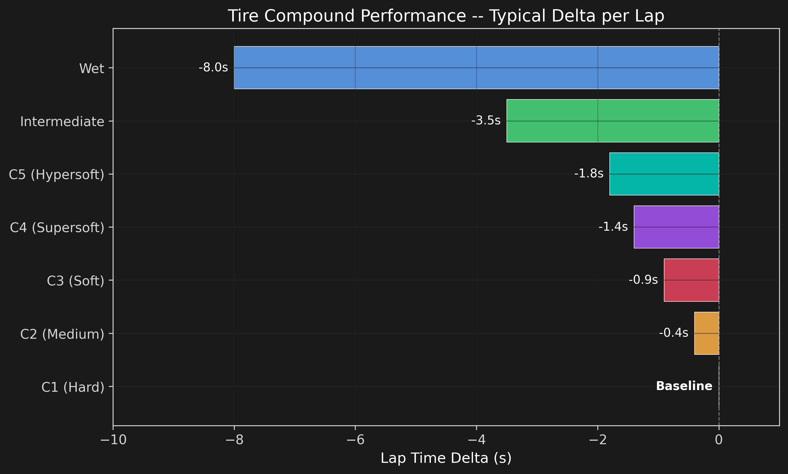
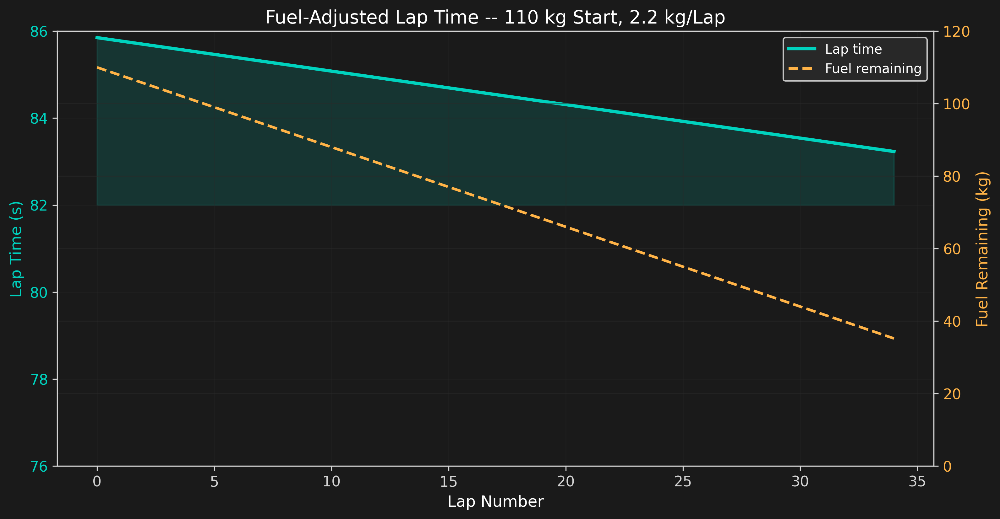
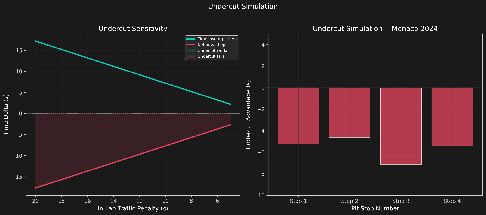
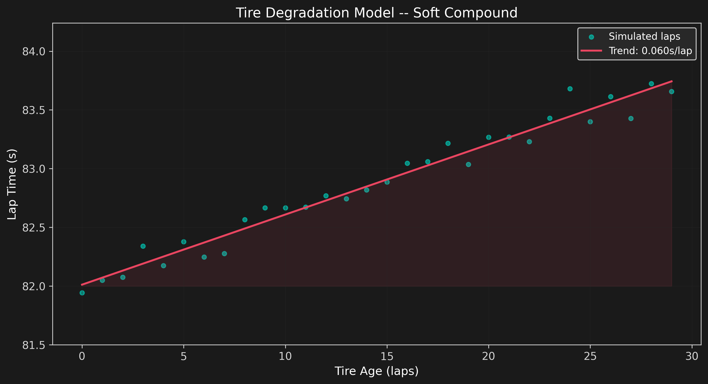
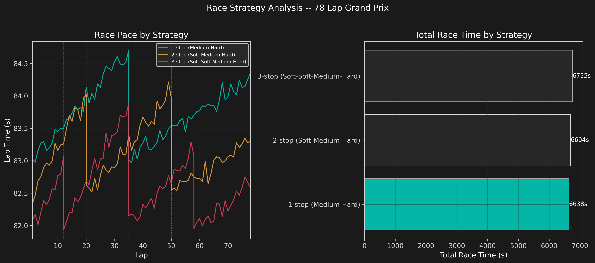
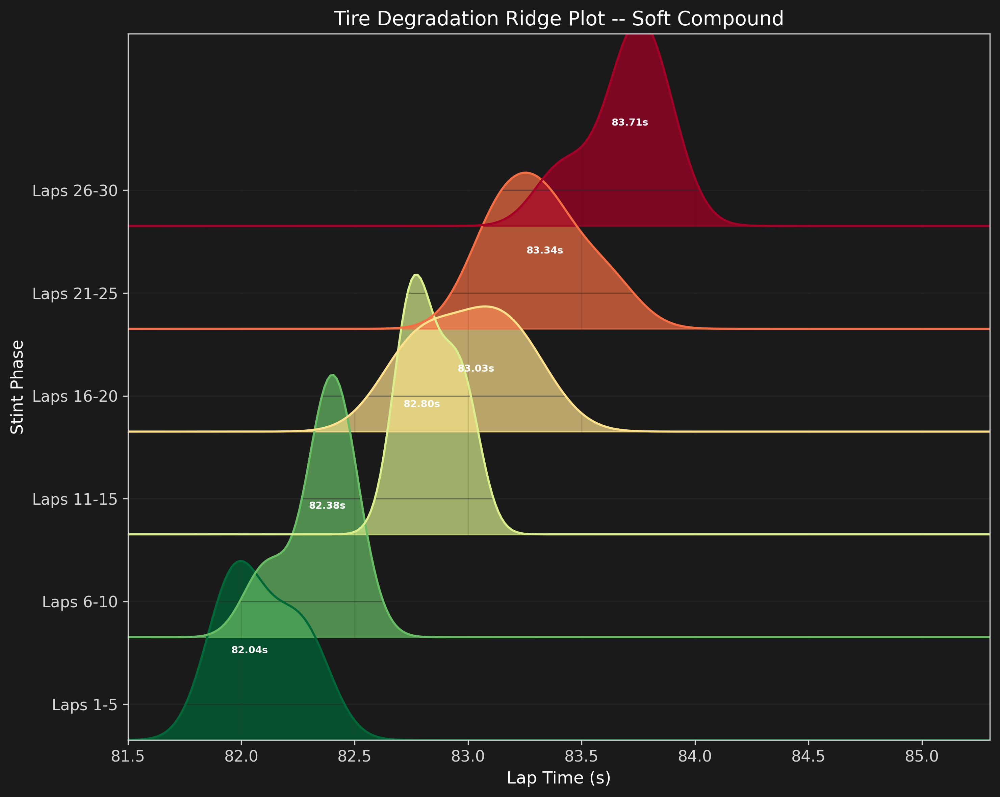

Race Strategy
Strategy Fundamentals
Race strategy in F1 is the art of optimizing pit stop timing, tire compound selection, and fuel management to minimize total race time. Every decision involves tradeoffs: softer tires are faster but degrade quicker, carrying extra fuel slows the car but extends the stint.
where $t_{lap,i}$ depends on tire compound, fuel load, tire age, and track position. The pit stop loss $t_{pit} \approx 22s$ must be regained through fresher tires and lower fuel weight.
Tire Compound Performance
The Pirelli tire range spans five dry compounds (C1 hardest to C5 softest) plus intermediates and wets. Each step softer gives roughly 0.4-0.5 seconds per lap but degrades faster.

Fuel-Adjusted Pace
As fuel burns off at ~2.2 kg per lap, the car becomes lighter and faster. The fuel effect is modeled as approximately 0.035 seconds per kilogram of fuel.

This fuel effect is one reason why teams sometimes extend a stint: the combination of lighter fuel load and track evolution can offset tire degradation for several laps.
Undercut Simulation
The undercut is a strategy where a driver pits early to gain track position over a rival. The net advantage depends on:
where $G_{new}$ is the grip gain from fresh tires, $G_{out}$ is the out-lap performance, and $L_{in}$ is the traffic penalty on the in-lap.

The undercut works best when the in-lap traffic penalty is low and the out-lap is clean. At Monaco, track position is so valuable that even a small undercut advantage can secure a place that is impossible to overtake on track.
Tire Degradation Model
Tire wear causes lap time to increase linearly with tire age. The degradation rate depends on compound (softer = faster degradation), track surface, temperature, and driving style.

Race Pace Projection
Comparing three strategy options for a 78-lap Grand Prix reveals the tradeoff between pit stop time and tire performance.

The simulation confirms that a 2-stop strategy (Soft-Medium-Hard) is typically fastest on total time, but the 1-stop is often preferred at circuits where overtaking is difficult. The 3-stop is only viable when tire degradation is severe or when a late safety car creates a cheap pit stop opportunity.
Tire Degradation Ridge Plot
While trend lines show the average degradation rate, the spread of lap times tells a different story. As tires age, not only does the median lap time increase, but the variance grows significantly. A driver on 25-lap-old tires might produce a lap anywhere from 0.3s faster to 0.5s slower than the trend line -- the performance becomes unpredictable.
The ridge plot stacks KDE distributions for each stint phase, making both the shift (median moving right) and the spread (curves getting wider) visible simultaneously. The green-to-red transition shows the degradation arc visually.

Key Findings
- Fuel effect dominates: The fuel burn-off can improve lap times by ~6s over a full stint, often offsetting tire degradation for the first 10-15 laps.
- Undercut window: The undercut is most effective when the in-lap traffic penalty is under 8 seconds. At Monaco, any undercut opportunity should be taken given the overtaking difficulty.
- Tire delta compounds: A two-step softer compound (e.g., C3 to C1) is worth ~0.9s/lap but may degrade 2-3x faster, making stint length the key strategic variable.
- 2-stop optimum: For a typical 78-lap race, the 2-stop strategy minimizes total race time by balancing pit stop cost against tire performance.
- Circuit dependency: Strategy choice depends heavily on track layout. Monaco favors 1-stop (track position priority), Monza favors 2-stop (overtaking is easier, tire degradation is lower).
Limitations
- Tire degradation model assumes linear wear; real tire behavior is more complex (grain, blister, off-sequence degradation).
- Fuel effect model is linear in remaining fuel; real fuel sensitivity varies with track layout and driving style.
- Undercut simulation does not account for track position dynamics, safety cars, or virtual safety car periods.
- Race pace projection uses representative base lap times; actual times depend on driver skill, car performance, and track conditions.
- No weather modeling -- rain completely changes tire choice, degradation rates, and strategy windows.
- Strategy optimization does not consider team tactics (team orders, covering rivals, splitting strategies across two cars).